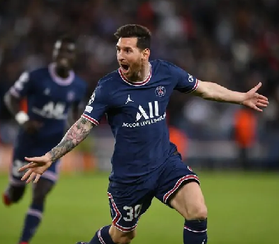

Competições e Estatísticas Por Clube
Competições: League 1, Liga dos Campeões, Cope de France
Títulos: League 1
League 1: 26 jogos , 2152 minutos jogados , 6 gol(s) , 14 assistência(s)
Liga dos Campeões: 7 jogos , 630 minutos jogados , 5 gol(s) , 0 assistência(s)
Cope de France: 1 jogos , 90 minutos jogados , 0 gol(s) , 0 assistência(s)
Total: 34 jogos , 2872 minutos jogados , 11 gol(s) , 14 assistência(s)
Destaques: Ganhou a League 1 sendo peça fundamental para o time, já que havia momentos que a equipe "morria".
Foi muito alvo de críticas da torcida junto com seu parceiro de equipe Neymar, pois segundo a torcida eles estavam sendo dois pesos mortos em campo e não voltavam a marcar
